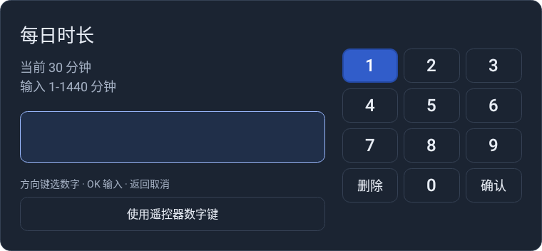
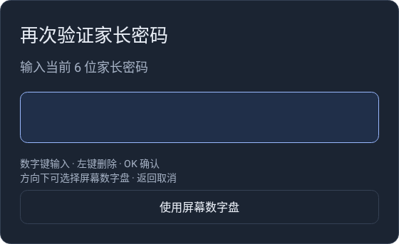

给安卓电视设置每天能看的时长。默认 30 分钟，用完自动锁屏，家长用遥控器管理。



以上截图均为应用原生渲染预览，使用示例数据。
需要 Android 4.4（API 19）及以上，遥控器有方向键、OK 和返回键即可；没有数字键时可使用屏幕数字键盘。
000000，再设置自己的 6 位家长密码。进入家长面板后，用方向键选择操作、按 OK 执行；有数字键的遥控器也可直接输入两位快捷码。
| 快捷码 | 操作 | 说明 |
|---|---|---|
00 | 关闭面板 | 只退出页面，不改变防护状态 |
11 | 改密码 | 再次验证后设置新密码 |
12 | 修改每日时长 | 每天 1–1440 分钟 |
13 | 检查更新 | 下载并安装正式版更新 |
22 | 临时加时长 | 只加今天，每天累计最多 60 分钟 |
33 | 立即锁定 | 马上锁屏，取消“今天不限时” |
44 | 关闭防护 | 确认后停止管控，保留时长和密码 |
99 | 启用防护 | 恢复普通管控，仅停用时显示 |
InputDevice 为 0–9 每个数字报告普通数字键或小键盘数字键支持，则隐藏屏幕数字盘，只显示实体输入区；未报告完整数字键或检测结果未知时显示数字盘，不按电视或遥控器品牌判断。tvguard_remote，优先于自动检测；切换会重排输入区域，不留空白数字盘位置。锁屏默认聚焦「家长管理」按钮，按 OK 进入家长验证，验证后打开面板，不自动解除当天限时。从该按钮出发，数字盘显示时方向下或右进入数字盘、方向左到切换按钮；实体模式时方向下或右到切换按钮，OK 可展开数字盘，也可直接用遥控器数字键输入。输入家长密码并确认则今天不限时，次日恢复。返回取消输入不会解除锁定。修改每日时长或临时加时也会恢复限时，但不会清空今天已看时长。
community-debug 包不能覆盖正式版。本轮版本为 2.5.6（versionCode 37），屏幕数字盘按数字键能力自动显示或隐藏，并支持本机手动选择优先；保留 Android 4.4 兼容路径。小米电视 2（MiTV2-40）的实机安装与遥控验收仍待 ADB 恢复后完成。
使用 JDK 17、Android SDK 35 和 Python 3。
./gradlew testDebugUnitTest assembleDebug
python3 -I -B -m unittest discover -s tools -p 'test_*.py' -v
python3 -I -B tools/md_to_html.pyMIT License。管理面板参考 Preline，使用 Android 原生控件实现。